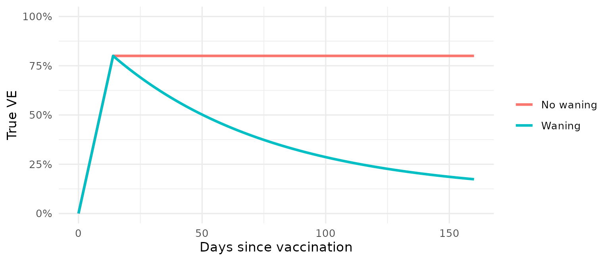
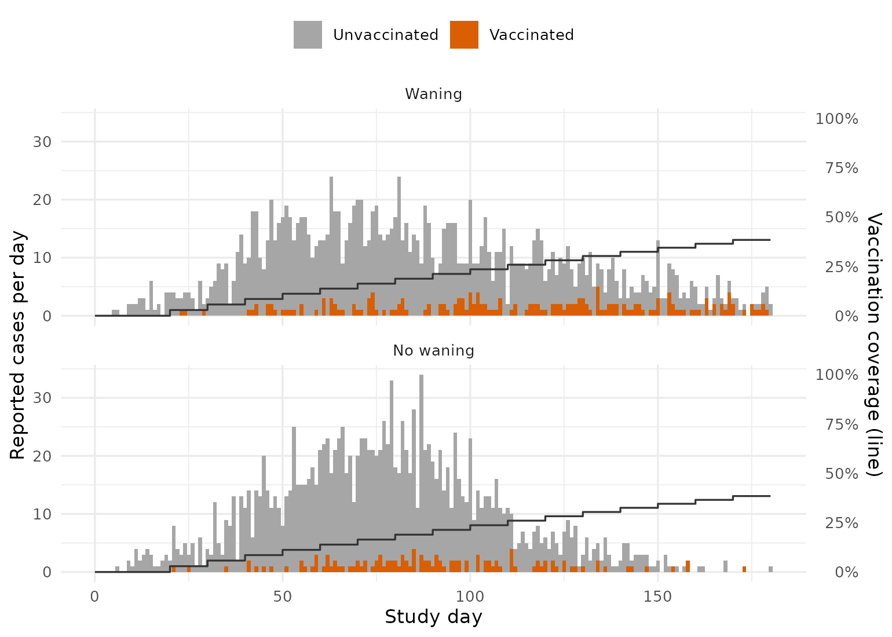
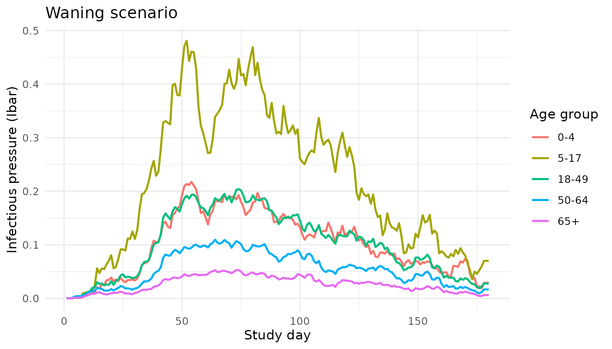
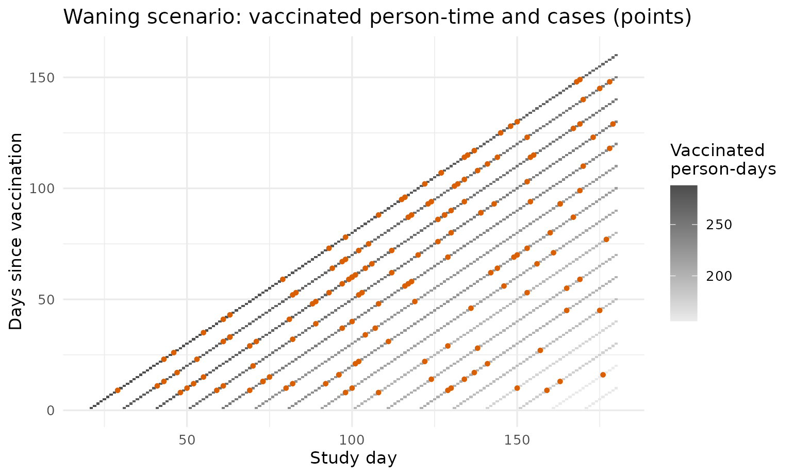
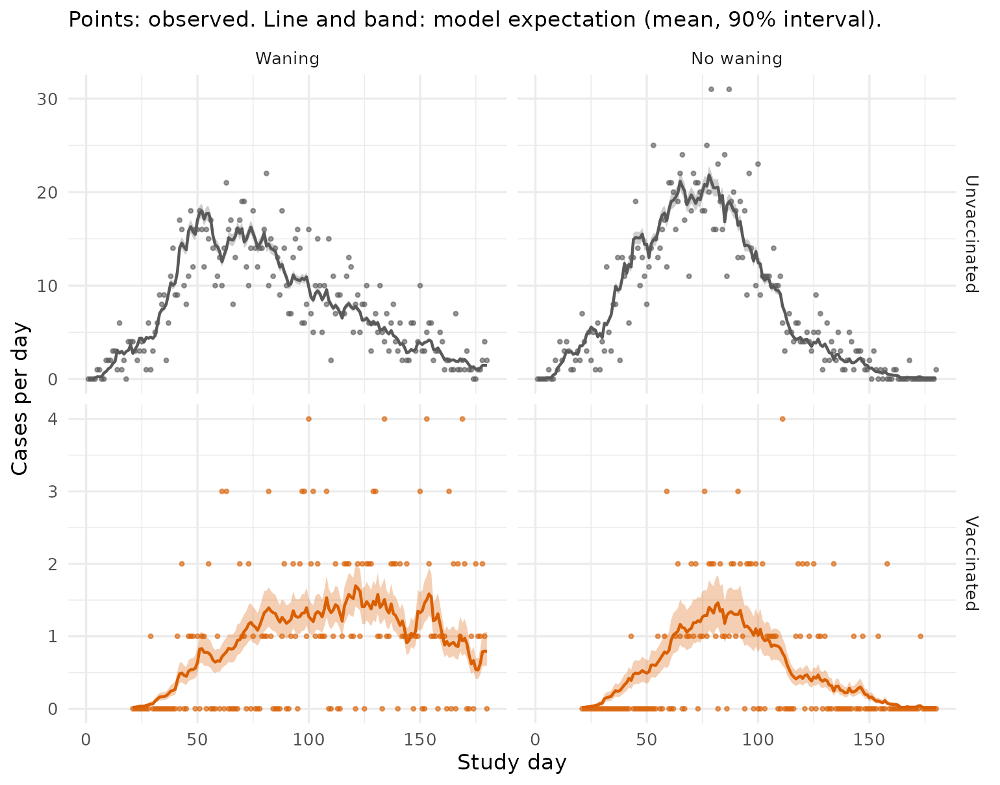
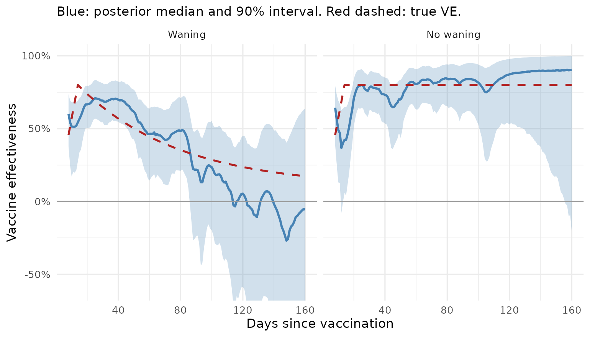

This vignette walks through the standard surviver analysis on simulated data where the true vaccine effectiveness (VE) is known. It shows the epidemic dynamics the method works with, how the data are prepared, how well the model fits the cases, and how close the estimated VE(t) is to the truth.
library(surviver)
library(ggplot2)
theme_set(theme_minimal())
scenarios <- list(Waning = ve_sim_waning, `No waning` = ve_sim_no_waning)The simulated data
ve_sim_waning and ve_sim_no_waning were
simulated with HERMES (Health, Epidemic and Economic
R-based Microsimulation Engine for Individual-based Simulations), an
individual-based model of infectious disease transmission in a
population structured into households, schools, workplaces and the wider
community, developed by Lander Willem (University of Antwerp). HERMES is
described in its repository and user
manual. For this package it was extended so that vaccine protection
changes with time since vaccination (waning-vaccine-effectiveness
branch).
Each dataset follows 10,000 people for 180 days. Vaccination starts on day 21 and is rolled out in 16 rounds, each vaccinating 3% of those still eligible. The two scenarios differ only in how protection changes after vaccination:
true_curves <- do.call(rbind, lapply(names(scenarios), function(s) {
data.frame(scenario = s, t = 0:160, ve = true_ve(0:160, scenarios[[s]]$params))
}))
ggplot(true_curves, aes(t, ve, colour = scenario)) +
geom_line(linewidth = 1) +
scale_y_continuous(limits = c(0, 1), labels = scales::percent) +
labs(x = "Days since vaccination", y = "True VE", colour = NULL)
Epidemic dynamics
ve_population() joins the demographic, vaccination and
case data into one row per person. Plotting reported cases by
vaccination status alongside vaccination coverage shows the setting the
method has to work in: the epidemic peaks while coverage is still
rising, so most vaccinated people spend much of their follow-up in a
waning epidemic.
pops <- lapply(scenarios, ve_population)
daily <- do.call(rbind, lapply(names(pops), function(s) {
p <- pops[[s]]
cases <- p[p$infected & p$time_of_reporting <= 180, ]
vax_at_report <- cases$vaccinated & cases$time_of_vaccination < cases$time_of_reporting
tab <- as.data.frame(table(day = cases$time_of_reporting,
status = ifelse(vax_at_report, "Vaccinated", "Unvaccinated")))
tab$day <- as.numeric(as.character(tab$day))
tab$scenario <- s
tab
}))
coverage <- do.call(rbind, lapply(names(pops), function(s) {
v <- pops[[s]]$time_of_vaccination
data.frame(scenario = s, day = 0:180,
coverage = sapply(0:180, function(d) mean(!is.na(v) & v <= d)))
}))
scale_k <- max(tapply(daily$Freq, list(daily$day, daily$scenario), sum), na.rm = TRUE)
ggplot() +
geom_col(data = daily, aes(day, Freq, fill = status), width = 1) +
geom_step(data = coverage, aes(day, coverage * scale_k), colour = "grey20") +
facet_wrap(~ factor(scenario, levels = names(scenarios)), ncol = 1) +
scale_fill_manual(values = c(Unvaccinated = "grey65", Vaccinated = "#d95f02")) +
scale_y_continuous("Reported cases per day",
sec.axis = sec_axis(~ . / scale_k, name = "Vaccination coverage (line)",
labels = scales::percent)) +
labs(x = "Study day", fill = NULL) +
theme(legend.position = "top")
Infectious pressure
The model’s baseline hazard is driven by the infectious pressure, or
force of infection, each age group experiences on each day. It is built
from reported cases (each assumed infectious for 7 days, starting 2 days
before being reported) and an age-structured contact matrix.
polymod_nl holds POLYMOD contact rates for the Netherlands;
contact_matrix_hermes() gives the contact structure HERMES
itself uses.
pop <- pops$Waning
inc <- daily_incidence(pop)
prev <- daily_prevalence(inc, duration_infection = 7, reporting_delay = 2)
foi <- force_of_infection(prev, age_group_sizes(pop), contact_matrix = polymod_nl)
ggplot(foi, aes(day, Ibar, colour = age_group)) +
geom_line(linewidth = 0.8) +
labs(x = "Study day", y = "Infectious pressure (Ibar)", colour = "Age group",
title = "Waning scenario")
Preparing the survival data
Each person’s follow-up is split at vaccination with
counting_process(). People who were infected before
vaccination but reported after it would otherwise be counted as vaccine
failures. In practice their infection date is unknown, so anyone
reported within 7 days of vaccination is censored at vaccination (see
the lab
notebook, entry 12). The data are then expanded to person-days and
aggregated into cells for the model.
early <- reported_soon_after_vaccination(pop, window = 7)
length(early)
#> [1] 25
cp <- counting_process(pop, censor_at_vaccination = early)
pd <- expand_person_days(cp)
sd <- make_stan_data(pd, foi)
sd$data[c("N", "K", "T_vax")]
#> $N
#> [1] 7700
#>
#> $K
#> [1] 5
#>
#> $T_vax
#> [1] 161Where the information about VE(t) comes from matters. Long times since vaccination can only be observed late in the study, among people vaccinated early, so calendar time and time since vaccination are linked. Each diagonal line below is one vaccination round followed through time; the top-left corner (long after vaccination, early in the study) can never be observed:
vac <- pd[pd$vax_status == 1, ]
grid <- aggregate(list(person_days = rep(1, nrow(vac))),
by = list(day = vac$day, days_since_vax = vac$days_since_vax), FUN = sum)
events <- vac[vac$event == 1, ]
ggplot(grid, aes(day, days_since_vax)) +
geom_tile(aes(fill = person_days)) +
geom_point(data = events, colour = "#d95f02", size = 1) +
scale_fill_gradient(low = "grey92", high = "grey30") +
labs(x = "Study day", y = "Days since vaccination", fill = "Vaccinated\nperson-days",
title = "Waning scenario: vaccinated person-time and cases (points)")
Fitting the model
The model is a Poisson approximation to a Cox model. The log hazard ratio for vaccination, , follows a random walk over days since vaccination, and VE(t) = 1 − exp():
Fitting needs cmdstanr and CmdStan:
fit <- fit_ve(sd, seed = 42)
ve <- extract_ve(fit)
expected <- expected_cases(fit, sd, by = c("day", "vax_status"))So that this vignette can be built without CmdStan, the results below
are loaded from fits run in advance with exactly this analysis for both
scenarios (data-raw/ve_fits.R).
fits <- readRDS(system.file("extdata", "ve_fits.rds", package = "surviver"))
# convergence diagnostics and key parameters of each fit
round(sapply(fits[c("waning", "no_waning")], function(f) unlist(f$diagnostics)), 3)
#> waning no_waning
#> max_rhat 1.004 1.003
#> divergences 0.000 0.000
#> log_beta -4.508 -4.482
#> sigma_gamma 0.149 0.251How well does the model fit the cases?
expected_cases() sums the model’s expected case counts
by day and vaccination status. Comparing them with the observed counts
checks that the infectious pressure and the vaccine effect together
reproduce the epidemic in both groups.
expected <- do.call(rbind, lapply(c(Waning = "waning", `No waning` = "no_waning"), function(k) {
e <- fits[[k]]$expected
e$scenario <- if (k == "waning") "Waning" else "No waning"
e
}))
expected$status <- ifelse(expected$vax_status == 1, "Vaccinated", "Unvaccinated")
ggplot(expected, aes(day)) +
geom_ribbon(aes(ymin = lower, ymax = upper, fill = status), alpha = 0.3) +
geom_line(aes(y = mean, colour = status), linewidth = 0.7) +
geom_point(aes(y = observed, colour = status), size = 0.7, alpha = 0.6) +
facet_grid(status ~ factor(scenario, levels = c("Waning", "No waning")),
scales = "free_y") +
scale_colour_manual(values = c(Unvaccinated = "grey35", Vaccinated = "#d95f02")) +
scale_fill_manual(values = c(Unvaccinated = "grey35", Vaccinated = "#d95f02")) +
labs(x = "Study day", y = "Cases per day",
subtitle = "Points: observed. Line and band: model expectation (mean, 90% interval).") +
theme(legend.position = "none")
Estimated VE against the truth
ve <- do.call(rbind, lapply(c("waning", "no_waning"), function(k) {
v <- fits[[k]]$ve
v$scenario <- if (k == "waning") "Waning" else "No waning"
v$truth <- true_ve(v$days_since_vax, scenarios[[v$scenario[1]]]$params)
v
}))
ve <- ve[ve$days_since_vax > 7, ] # not estimable in the censoring window
ggplot(ve, aes(days_since_vax)) +
geom_ribbon(aes(ymin = lower, ymax = upper), fill = "steelblue", alpha = 0.25) +
geom_line(aes(y = median), colour = "steelblue", linewidth = 0.9) +
geom_line(aes(y = truth), colour = "firebrick", linetype = "dashed", linewidth = 0.8) +
geom_hline(yintercept = 0, colour = "grey60") +
facet_wrap(~ factor(scenario, levels = c("Waning", "No waning"))) +
coord_cartesian(ylim = c(-0.6, 1)) +
scale_y_continuous(labels = scales::percent) +
labs(x = "Days since vaccination", y = "Vaccine effectiveness",
subtitle = "Blue: posterior median and 90% interval. Red dashed: true VE.")
The model recovers the rise and decline of protection in the waning scenario and the plateau in the no-waning scenario. Known limitations, all recorded in the lab notebook:
- time since vaccination is measured to the report date, so the estimate lags the true curve by several days, and VE in the first week is not estimable after censoring;
- beyond about 90 days the waning scenario’s estimate falls below the truth, partly because calendar time and time since vaccination are linked (see the person-time plot above);
- intervals widen at long times since vaccination, where there are few cases.
References
- Willem L. HERMES: Health, Epidemic and Economic R-based Microsimulation Engine for Individual-based Simulations. University of Antwerp. https://github.com/lwillem/ibm_hermes; user manual (extended version for the Lorentz Center workshop): https://github.com/lwillem/ibm_hermes/blob/lorentz_center_workshop/doc/user_manual_HERMES.pdf.
- Mossong J, et al. (2008) Social contacts and mixing patterns relevant to the spread of infectious diseases. PLoS Med 5(3):e74.